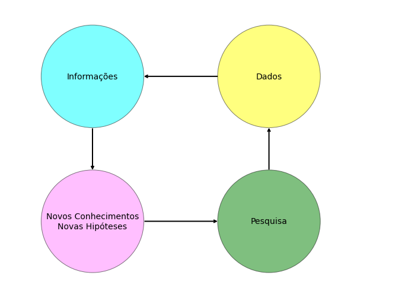

import pandas as pd
import networkx as nx
import matplotlib.pyplot as plt
From = ['Pesquisa', 'Dados', 'Informações',
'Novos Conhecimentos\nNovas Hipóteses']
To = ['Dados', 'Informações',
'Novos Conhecimentos\nNovas Hipóteses', 'Pesquisa']
df = pd.DataFrame({ 'from':From,
'to':To})
# Define Node Positions
pos = {'Pesquisa':(3,1),
'Dados':(3,3),
'Informações':(1,3),
'Novos Conhecimentos\nNovas Hipóteses':(1,1)}
# Define Node Colors
NodeColors = {'Pesquisa':[0,.5,0],
'Dados':[1,1,0],
'Informações':[0,1,1],
'Novos Conhecimentos\nNovas Hipóteses':[1,.5,1]}
Labels = {}
i = 0
for a in From:
Labels[a]=a
i +=1
Labels[To[-1]]=To[-1]
# Build your graph. Note that we use the DiGraph function to create the graph! This adds arrows
G=nx.from_pandas_edgelist(df, 'from', 'to', create_using=nx.DiGraph() )
# Define the colormap and set nodes to circles, but the last one to a triangle
Circles = []
Traingle = []
Colors_Circles = []
Colors_Traingle = []
for n in G.nodes:
Circles.append(n)
Colors_Circles.append(NodeColors[n])Aula 1 - Introdução
PPEC
Ensino
Estatística
primeira aula

Aula 1 : Apresentação do Curso e das suas Ferramentas

A estatística está em todo lugar
A Estatística é a ciência que utiliza-se das teorias probabilísticas para explicar a frequência da ocorrência eventos, tanto em estudos observacionais quanto em experimento para modelar a aleatoriedade e a incerteza de forma a estimar ou possibilitar a previsão de fenômenos futuros, conforme o caso. 
O nosso curso
Tutoriais de exercícios Reuniões no Horário da disciplina. Vídeos, textos e wikis 13 tópicos Uso de Python e R na resolução de exercícios
Ferramentas
Python Planilhas eletronicas R SPSS e similares
Avaliação
2 trabalhos práticos + atividades no SIGAA
 ## Planejamento da Coleta de dados
## Planejamento da Coleta de dados
Processo iterativo da construção do conhecimento
plt.figure(figsize = (12,9))
# By making a white node that is larger, I can make the arrow "start" beyond the node
nodes = nx.draw_networkx_nodes(G, pos,nodelist = Circles,node_size=3e4,node_shape='o',node_color='white',alpha=1)
nodes = nx.draw_networkx_nodes(G, pos, nodelist = Circles,node_size=3e4, node_shape='o',node_color=Colors_Circles,edgecolors='black',
alpha=0.5)
nx.draw_networkx_labels(G, pos, Labels, font_size=14)
# Again by making the node_size larer, I can have the arrows end before they actually hit the node
edges = nx.draw_networkx_edges(G, pos, node_size=3e4,arrowstyle='->',width=2,arrowsize=10)
plt.xlim(0,4.5)
plt.ylim(0,4)
plt.axis('off')
plt.show()
print(df) from to
0 Pesquisa Dados
1 Dados Informações
2 Informações Novos Conhecimentos\nNovas Hipóteses
3 Novos Conhecimentos\nNovas Hipóteses PesquisaEstatistica Descritiva e Estatística Inferencial
A estatística descritiva envolve a organização, resumo e representação dos dados.
Já na estatística inferencial estamos sempre interessados em utilizar as informações de uma amostra para chegar a conclusões sobre um grupo maior, ao qual não temos acesso.
Tipos de Pesquisa

Pesquisa experimental

Pesquisa de Levantamento (Survey)

Pesquisa Aplicada

Pesquisa Teórica
População e Amostra

Coleta de dados
 1. Unidade Experimental ou Parcela 2. Casualizacao 3. Repeticao 4. Controle local (blocos)
1. Unidade Experimental ou Parcela 2. Casualizacao 3. Repeticao 4. Controle local (blocos)
Dados e Variáveis

- Tratamento
- Outliers
- Variavel resposta ou Variavel dependente
- uso de variaveis concomitantes
- Efeito de borda
Ferramentas computacionais
 Jupyter Notebook;
Jupyter Notebook;
Google Colab;
Git e Github;
Python e R;
Exercícios

Apostila de Estatística
Apostila de Planejamento de Experimentos I
Apostila de Planejamento de Experimentos II